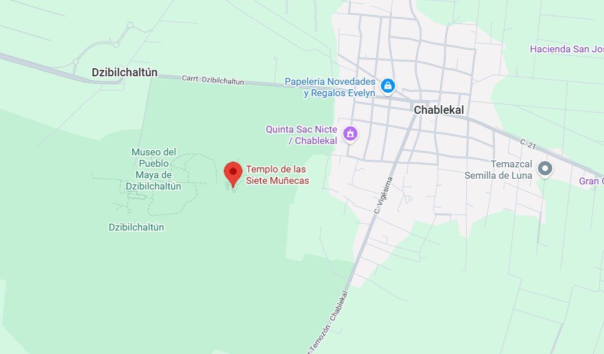

es una estructura maya ubicada en Dzibilchaltún, Yucatán. Construido durante el periodo Clásico, debe su nombre a las pequeñas figuras encontradas en su interior durante excavaciones. El templo es famoso por su alineación astronómica, ya que durante los equinoccios el sol aparece justo en su puerta, creando un espectáculo de luz. Refleja el profundo conocimiento maya sobre astronomía y su relación con el tiempo y la naturaleza. Hoy es uno de los puntos más emblemáticos de Dzibilchaltún y un lugar clave para comprender la cosmovisión maya.
Ubicación |
Información Esencial
|